Autonomic Pharmacology the receptors, and the drugs that hit them
Every lecture slide, shown in full — then explained the way a tutor would: the wiring logic that makes the whole system predictable, which receptor each drug grabs, and the clinical reason you'd reach for it. Get the transmitter-and-receptor map and every drug in the lecture becomes "agonist or antagonist, here."
Covers 22 slides · 6 partsFigures the lecture's own slidesSelf-tests interactive recall
How to use this guide
Each slide is shown in full (click to enlarge). The text underneath is not a re-caption — it adds the mechanism, the reasoning and the clinical angle the slide leaves unsaid. The organising idea: every ANS drug is an agonist/antagonist at a named receptor, or a modulator of the transmitter (synthesis, release, reuptake, breakdown). The coloured notes flag the asides:
Why / mechanism The receptor and signalling logic the slide assumes.
Exam hook The discriminating fact, suffix or framework that earns the mark.
Clinical What the drug is used for — and who it's dangerous in.
§0Scope of the lecture
Learning objectives
Wiring, then receptors, then drugs — in that order for a reason.
The objectives are to describe the two ANS divisions, identify the transmitters and receptors, and explain how drugs act on them. The order isn't accidental: the drugs only make sense once the receptor map is in place.
SLIDE 2Learning objectives
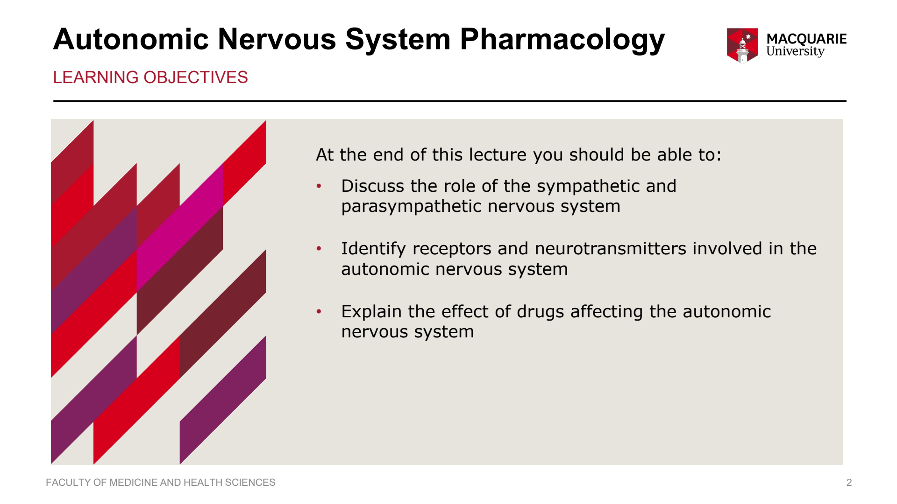
Orientation
Hold one organising sentence for the whole lecture: every drug here either mimics or blocks a transmitter at a specific receptor, or changes how much transmitter is around. Keep asking "which receptor, agonist or antagonist?" and the pharmacology stays small.
§1Wiring of the ANS
Organisation of the ANS
Two divisions, a two-neuron chain, and a simple transmitter rule.
The autonomic system runs the involuntary body. Its predictability comes from a fixed wiring plan: a two-neuron relay with the same transmitter at every ganglion, and division-specific transmitters at the target.
SLIDE 4ANS — a branch of the PNS
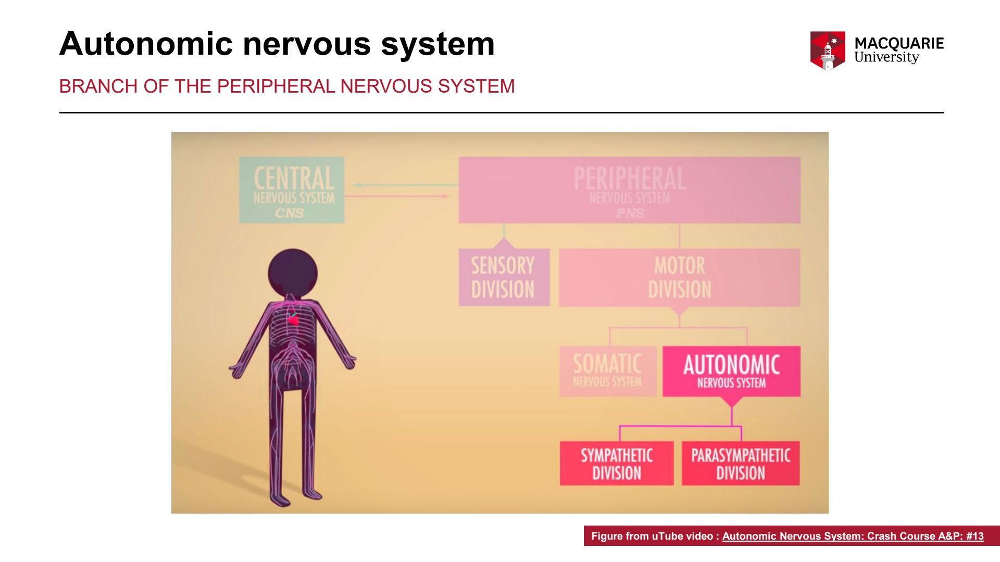
SLIDE 5Sympathetic & parasympathetic
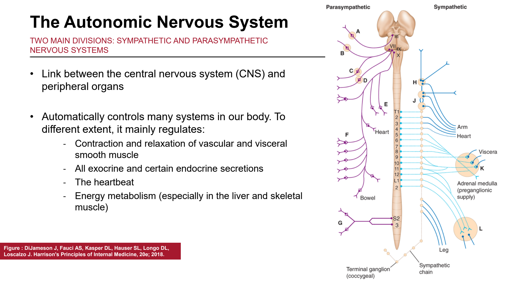
The ANS is the involuntary (visceral) motor arm of the peripheral nervous system, linking the CNS to smooth muscle, cardiac muscle and glands. Its two divisions aren't really "on/off" — most organs get both, and tone is the balance between them at any moment.
SLIDE 6Opposing effects & dual innervation
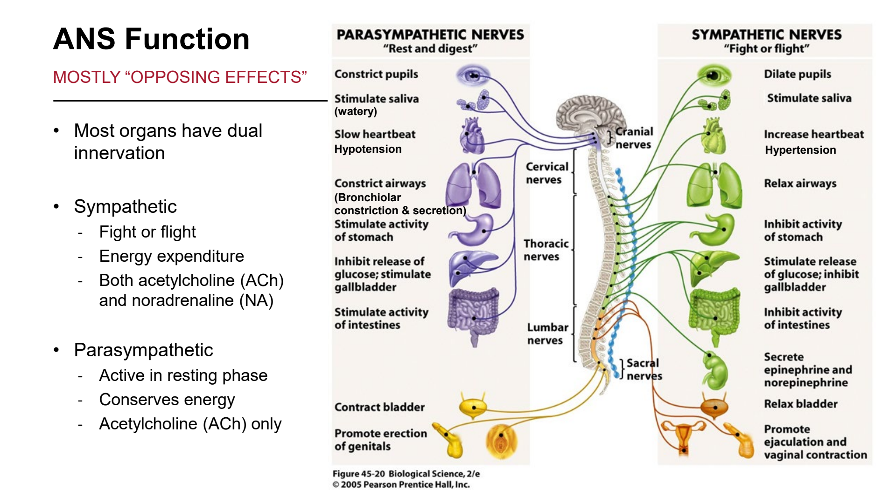
Exam hook · fight-or-flight vs rest-and-digest
Reason out each organ rather than memorising the table. Sympathetic = prepare to run: ↑heart rate & force, bronchodilation, pupils dilate, blood shunted to muscle, gut and bladder shut down, glucose mobilised. Parasympathetic = "rest and digest" (and the watery "SLUD" — salivation, lacrimation, urination, defecation): ↓heart rate, bronchoconstriction, pupils constrict, gut motility and secretion up. Opposite effects because they work through different receptors — which is why a drug can target one without the other.
SLIDE 7Neurotransmitters of the ANS
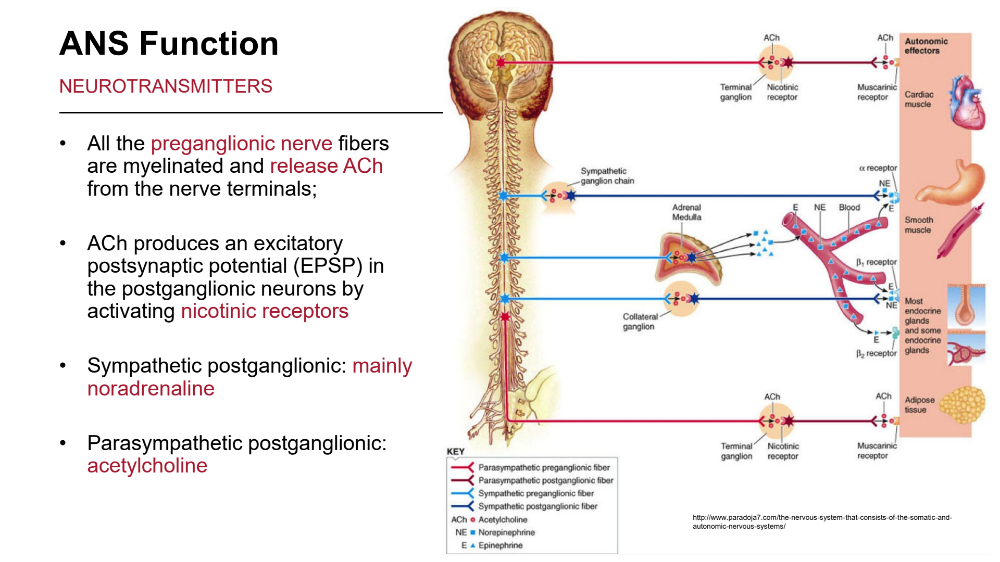
Why · the transmitter rule that unlocks everything
Three rules and you can predict any synapse. (1) Every preganglionic fibre — both divisions — releases ACh onto nicotinic receptors on the postganglionic cell. (2) Parasympathetic postganglionic fibres release ACh onto muscarinic receptors. (3) Sympathetic postganglionic fibres release noradrenaline onto adrenoceptors — with two classic exceptions: sweat glands (sympathetic but cholinergic/muscarinic) and the adrenal medulla, a modified ganglion that, on nicotinic stimulation, dumps adrenaline straight into the blood. Those rules tell you which receptor every ANS drug must be hitting.
§2The targets
The receptors
Two families, two signalling styles — and that dictates drug design.
All the drugs land on one of two receptor families: cholinergic (nicotinic + muscarinic) or adrenoceptors (α + β). How each receptor signals explains both its speed and its drug targets.
SLIDE 8The receptor map
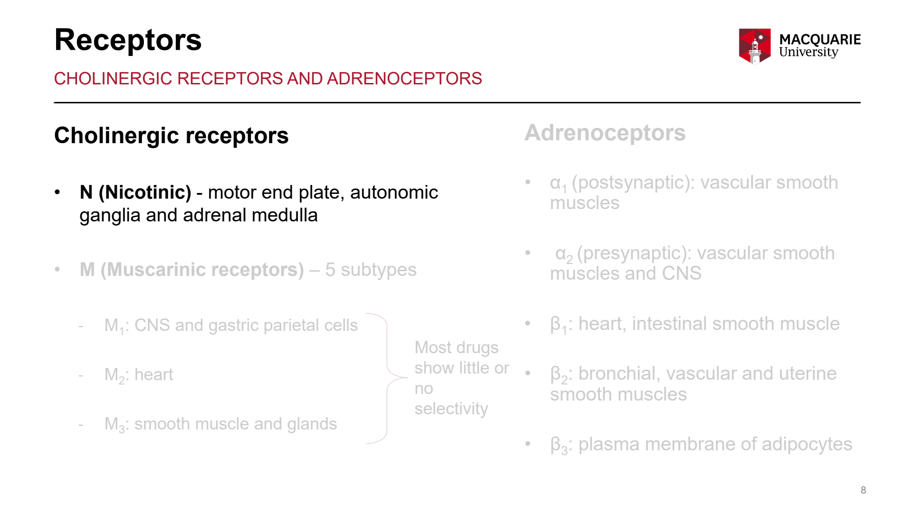
Exam hook · know the locations
This table is the lecture's backbone — learn where each receptor is. Nicotinic: motor end-plate, autonomic ganglia, adrenal medulla. Muscarinic: M1 (CNS, gastric parietal cells), M2 (heart), M3 (smooth muscle & glands). Adrenoceptors: α1 (vascular smooth muscle → vasoconstriction), α2 (presynaptic + CNS), β1 (heart), β2 (bronchial/vascular/uterine smooth muscle → relaxation), β3 (fat, bladder). The slide's warning matters: most drugs show limited subtype selectivity, which is the source of their off-target effects.
SLIDE 9Nicotinic receptor — ionotropic
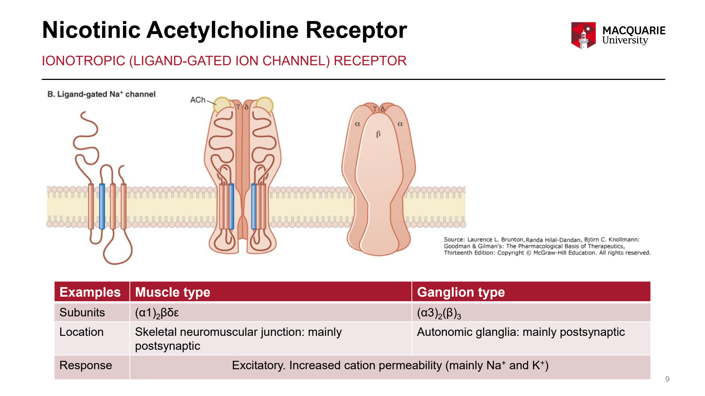
SLIDE 11Muscarinic receptor — metabotropic
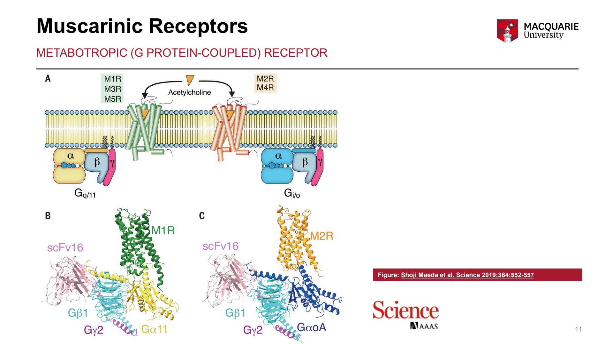
Why · channel vs GPCR = fast vs slow
The two cholinergic receptors are completely different machines. The nicotinic receptor is an ionotropic ligand-gated ion channel — ACh binds and cations flow instantly, giving the millisecond EPSP needed for ganglionic and neuromuscular transmission. The muscarinic receptor is a GPCR (metabotropic) working through G-proteins and second messengers — slower, amplified, modulatory. Same ligand (ACh), opposite kinetics — and the reason a muscle relaxant (nicotinic) and an antimuscarinic do such different things.
SLIDE 13Adrenoceptors — G-protein coupling
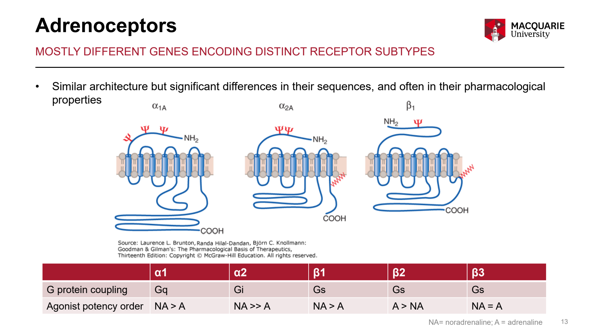
Why · the G-protein tells you the effect
Decode the bottom row and the pharmacology falls out. α1 → Gq (↑Ca²⁺ → smooth-muscle contraction → vasoconstriction). α2 → Gi (↓cAMP; sitting presynaptically, it's an autoreceptor that shuts off NA release — the basis of clonidine lowering BP). β1/β2/β3 → Gs (↑cAMP): β1 drives the heart, β2 relaxes bronchi/vessels/uterus. The potency orders matter too — β2 is adrenaline-preferring (A > NA), which is why circulating adrenaline bronchodilates in fight-or-flight.
Three ways to touch a cholinergic synapse: add an agonist, stop ACh being broken down, or block the receptor. Each maps to a drug class and a clinical use.
SLIDE 15The cholinergic junction — the targets
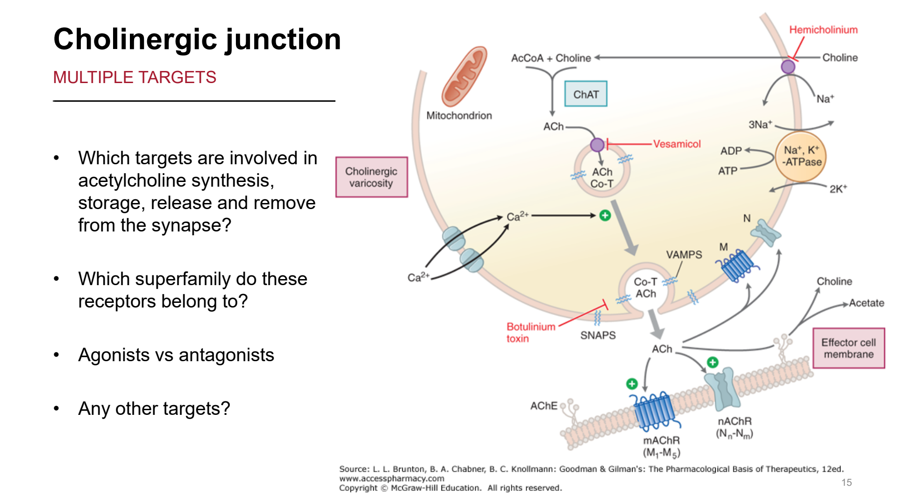
Why · the drug-target checklist
Every cholinergic drug hits one step of the ACh life-cycle: synthesis (choline uptake), storage/release from vesicles, the receptor (nicotinic or muscarinic), or breakdown by acetylcholinesterase. Hold that five-step map and each drug below just plugs into a slot.
SLIDE 16Muscarinic agonists
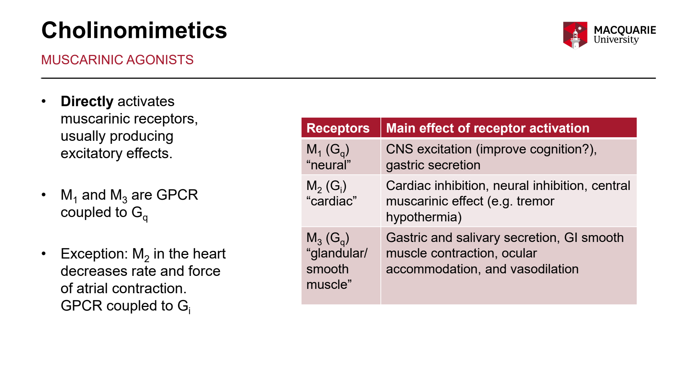
SLIDE 17Muscarinic agonists (cont.)
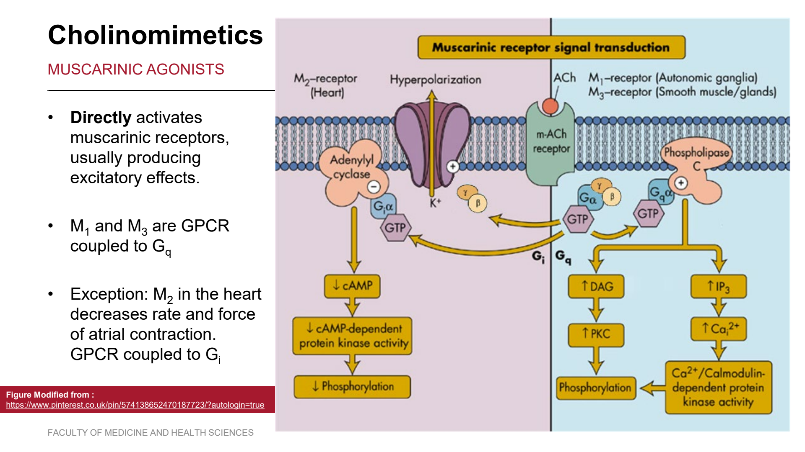
Clinical · cholinomimetic effects = "turning up the parasympathetic"
Directly activating muscarinic receptors reproduces rest-and-digest: glandular secretion, gut/bladder smooth-muscle contraction, pupillary constriction and ocular accommodation, and — via cardiac M2 (Gi) — a slower, weaker heartbeat. Hence their uses (and toxicity): e.g. pilocarpine for glaucoma/dry mouth, bethanechol for a sluggish bladder/gut. The M2 exception is worth flagging — most muscarinic effects are "excitatory," but in the heart the receptor is inhibitory.
SLIDE 18Anticholinesterases
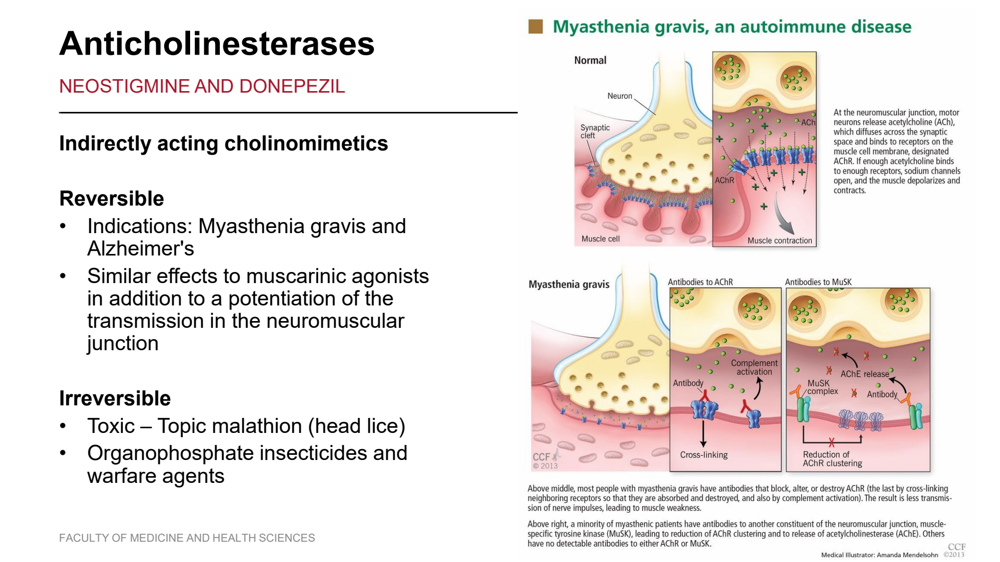
Clinical · amplify the ACh you already make
Rather than add an agonist, anticholinesterases block the enzyme that destroys ACh, so transmitter accumulates and every cholinergic synapse is amplified — including, crucially, the neuromuscular junction. That's why neostigmine treats myasthenia gravis (boosts failing NMJ transmission) and reverses muscle relaxants, while donepezil (crosses into the CNS) is used in Alzheimer's. The dark side of the same mechanism: organophosphate poisoning (irreversible AChE inhibition) → a cholinergic crisis, treated with atropine + an enzyme reactivator.
SLIDE 19Cholinergic antagonists
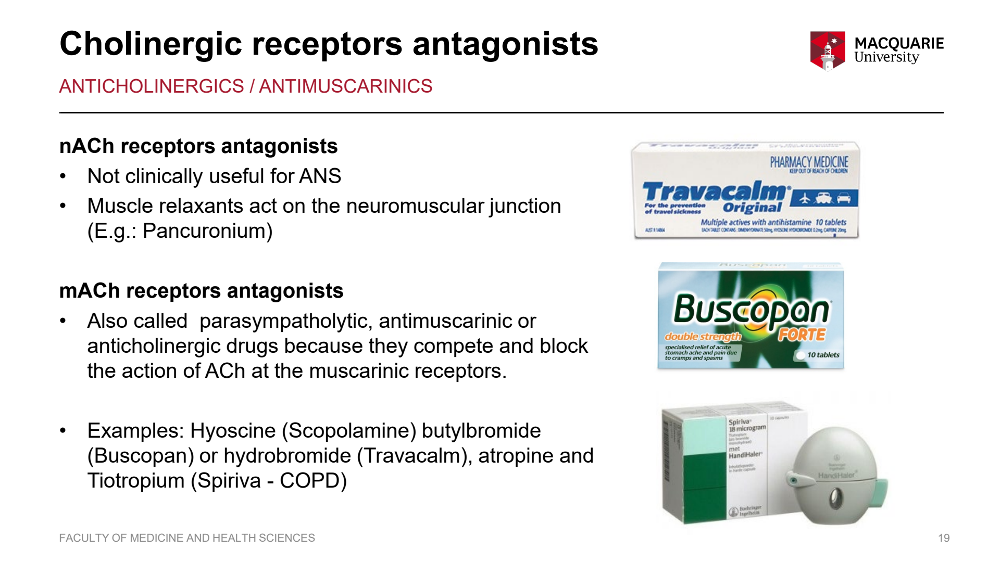
Clinical · block the receptor
Two very different antagonist classes. Nicotinic antagonists at the NMJ are muscle relaxants for anaesthesia (e.g. pancuronium) — ganglionic nicotinic blockers aren't clinically useful because they'd block both divisions at once. Antimuscarinics (anticholinergics) block the parasympathetic effects: atropine (↑heart rate in bradycardia, dries secretions), hyoscine (motion sickness, antispasmodic — Buscopan/Travacalm), tiotropium/ipratropium (inhaled bronchodilators for COPD). Their side effects are predictable rest-and-digest withdrawal: "dry as a bone, red as a beet, blind as a bat, mad as a hatter."
§4Drugs at adrenergic synapses
Adrenergic drugs
Mimic, release, or block noradrenaline — and mind the subtype.
The same logic on the sympathetic side: direct agonists, indirect drugs that raise synaptic NA, and antagonists. Here receptor subtype selectivity is where the clinical skill lives.
SLIDE 20The adrenergic junction — the targets
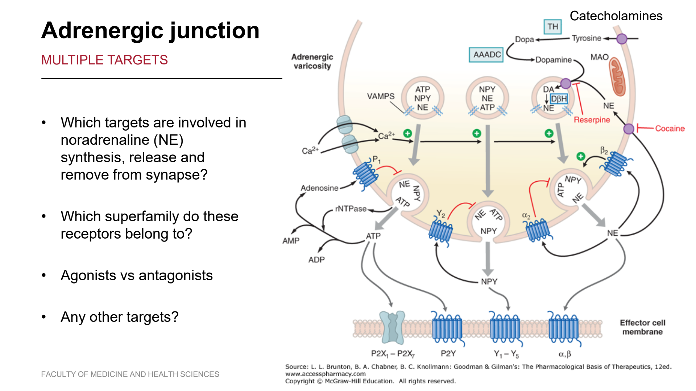
Why · one extra target vs the cholinergic junction
Same checklist (synthesis → release → receptor), but with a key addition: noradrenaline is cleared mostly by reuptake back into the nerve terminal via the noradrenaline transporter (NET), not by an extracellular enzyme. That reuptake step is a drug target in its own right (next slides) — and the reason indirect sympathomimetics exist.
SLIDE 21Sympathomimetics — the effects
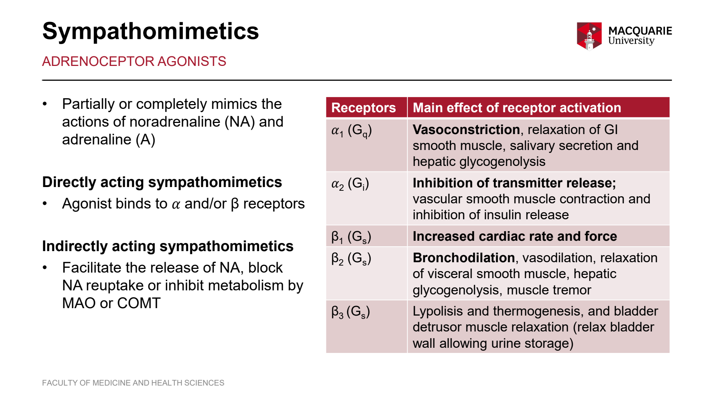
SLIDE 22α/β & β2 agonist examples
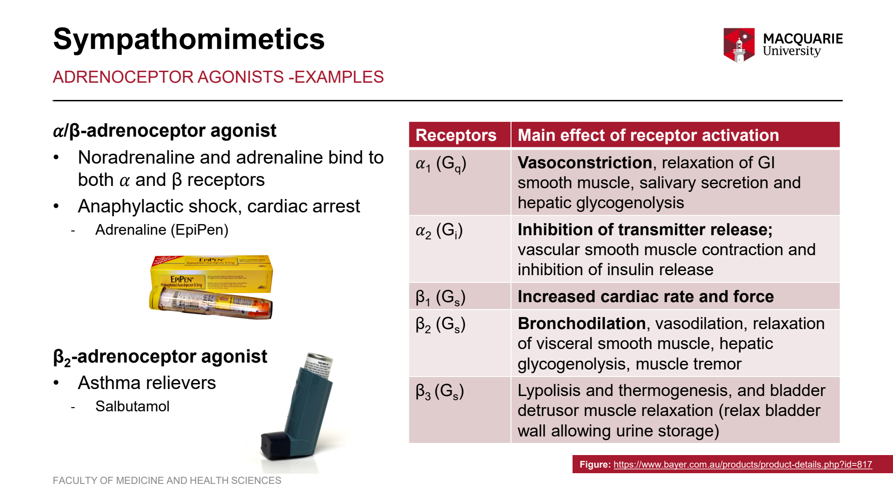
Clinical · selectivity is the whole game
Match agonist to receptor and the use is obvious. Adrenaline hits α and β — vasoconstriction + cardiac stimulation + bronchodilation — the perfect combination for anaphylaxis and cardiac arrest (EpiPen). Salbutamol is β2-selective → bronchodilation for asthma with (relatively) little cardiac β1 effect — though its β2 action on muscle explains the classic tremor side effect.
SLIDE 23Selective α1 agonists
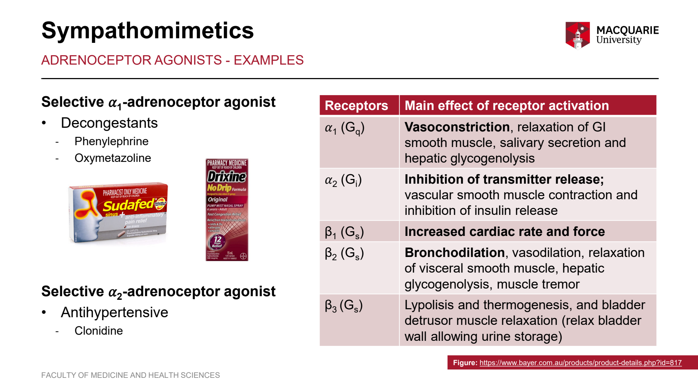
Phenylephrine is the worked example of α1 selectivity: it vasoconstricts, so applied to the nose it shrinks the mucosal vessels → a decongestant. The same α1 vasoconstriction is why it (and relatives) can raise blood pressure and cause reflex bradycardia — one receptor, several uses and cautions.
SLIDE 24Indirect sympathomimetics
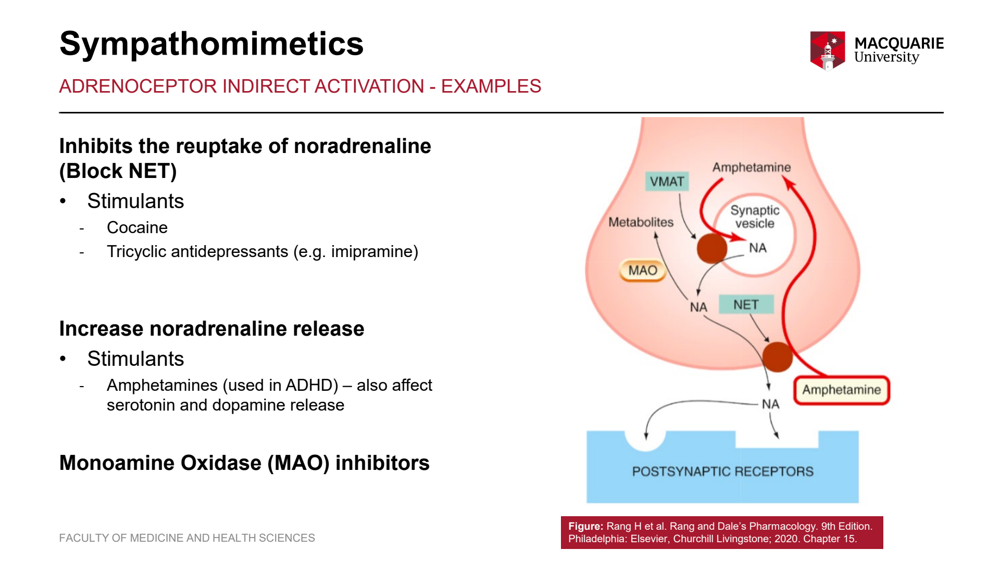
Clinical · drugs that don't touch the receptor at all
These raise noradrenaline around the receptor. Cocaine and tricyclic antidepressants block the NET reuptake transporter, so released NA lingers and sympathetic tone climbs — explaining cocaine's hypertension, tachycardia and arrhythmias, and TCA cardiotoxicity in overdose. Amphetamines instead force NA (and dopamine) release. Same end result — a flooded synapse — by two different mechanisms, which is why these are the classic "sympathomimetic toxidrome" drugs.
SLIDE 25Adrenoceptor antagonists
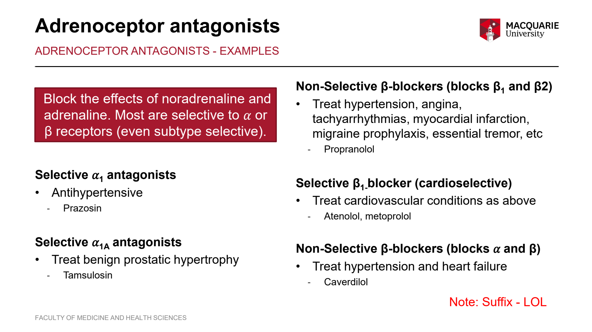
Clinical · the blockers, and the suffix trick
β-blockers end in "-olol"; blocking β1 lowers heart rate, force and renin → used for hypertension, angina, arrhythmias, post-MI and (carefully) heart failure (carvedilol), plus non-cardiac uses like migraine prophylaxis and tremor. Cardioselective β1 agents (atenolol, metoprolol) are preferred in airways disease, because a non-selective blocker (propranolol) also blocks airway β2 → bronchospasm — dangerous in asthma. α1-blockers ("-osin"): prazosin for hypertension, tamsulosin for benign prostatic hyperplasia (relaxes prostatic/bladder-neck smooth muscle).
§5Putting it together
The big picture
One map of the whole system — use it to self-test.
These closing figures pull the lecture into a single diagram. Cover the labels and rebuild it: transmitter → receptor → effect, for each division.
SLIDE 26ANS overview diagram
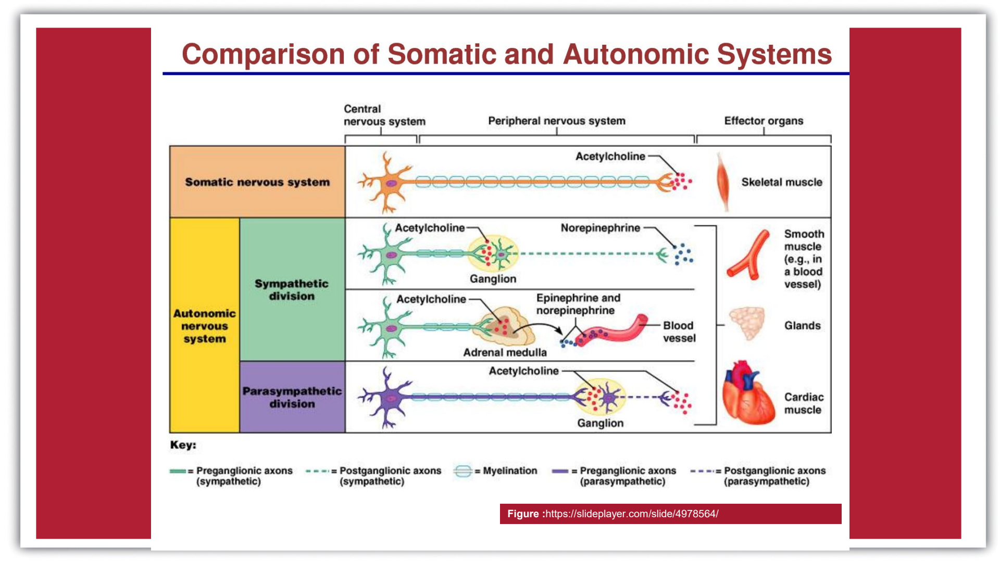
SLIDE 27Sympathetic vs parasympathetic effects
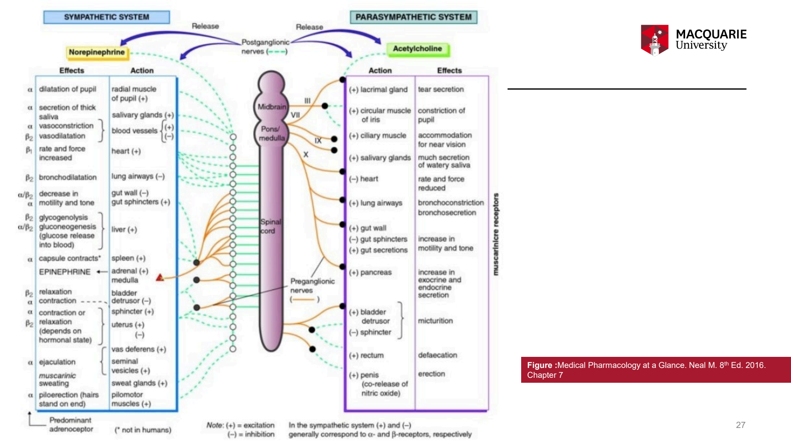
Exam hook · how to use these to revise
Treat the summary as a blank-and-fill. Pick any organ, then state: which division acts, which transmitter, which receptor subtype, and the effect — then name a drug that would mimic and one that would block it. If you can do that for heart, airway, eye, bladder and blood vessels, you have the lecture.
Built from: MEDI2004 Week 10 Lecture 19 — Autonomic pharmacology, Macquarie University. Personal study aid: the lecture's own slides, each explained in depth. Not for redistribution.
All 22 content slides covered, in order. Click any slide to enlarge; quote a code (e.g. §4) to go deeper, or hit Generate quiz (top) to spin one up from this guide.
scroll or +/− to zoom · drag to reposition · Esc to close